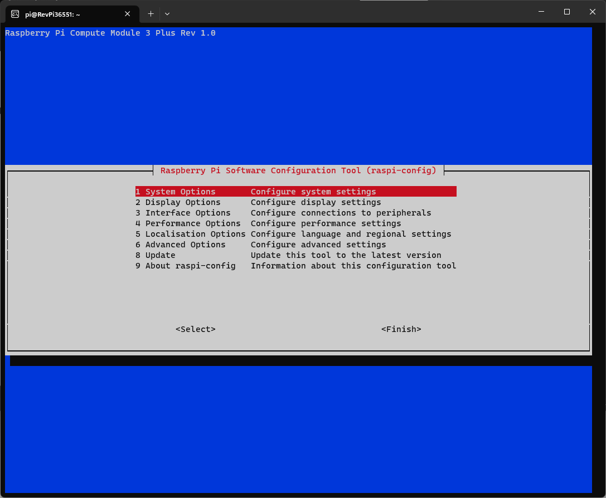
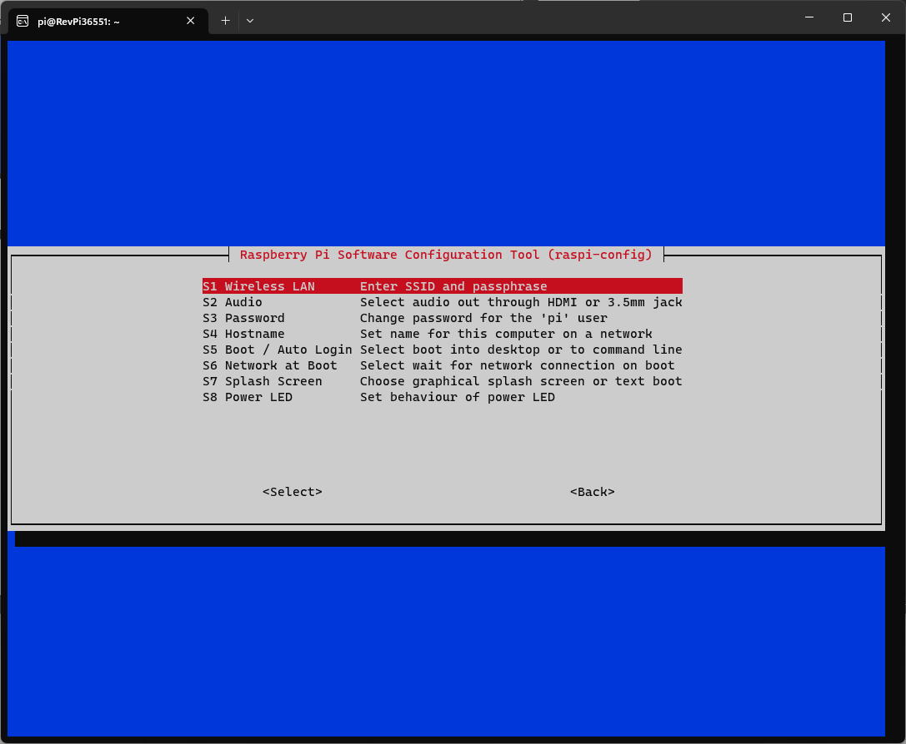
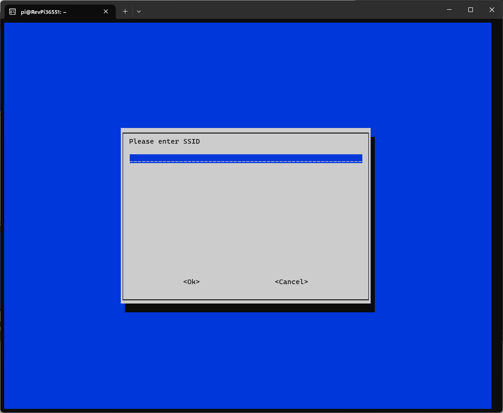

Using a Wifi adapter tp-link TL-WN823N (RTL8192EU)
Step by step Anleitung
Vorbereitung des RevPi
Flashen des aktuellen Image auf den RevPi mit RPIBoot und balenaEther.
-
aktuelles RevPi Image: https://revolutionpi.de/download/12592/?tmstv=1691151510
-
balenaEther: https://etcher.balena.io/
RevPi mit dem PC über den MicroUSB Port an der Front verbinden und RPIBoot starten.
Nach dem flashen des RevPi mit dem aktuellen Image und einrichten (MAC, Seriennummer) müssen alle Pakte auf den aktuellen Stand gebracht werden
pi@RevPi36551:~ $ sudo apt updatepi@RevPi36551:~ $ sudp apt upgradeSystem für die Installation des Treiber vorbereiten
Installation von linux-headers-generic und dkms, um eine Kernelupdate auf dem Gerät machen zu können. (Wichtig ist den vorherigen Schritt nicht zu überspringen)
pi@RevPi36551:~ $ sudo apt install raspberrypi-kernel-headerspi@RevPi36551:~ $ sudo apt install dkmsAlle Pakete anzeigen lassen die auf dem System installiert sind.
pi@RevPi36551:~ $ dpkg --get-selections| Für das weitere Vorgehen sind folgede Pakte wichtig: raspberrypi-kernel-headers, build-essential, dkms, git. |
Einen Ordner erzeugen für das Github Projekt und in den Ordner gehen. (mit pwd kann man sich den aktuellen Pfad anzeigen lassen und mit ls den Inhalt, mit cd .. geht man einen Ordner nach oben)
pi@RevPi36551:~ $ mkdir wifi_driverpi@RevPi36551:~ $ cd wifi_driver/Das Github Projekt mit dem Treiber und Shell Script Clonen.
pi@RevPi36551:~/wifi_driver $ git clone https://github.com/clnhub/rtl8192eu-linux.git
Cloning into 'rtl8192eu-linux'...
remote: Enumerating objects: 2231, done.
remote: Counting objects: 100% (325/325), done.
remote: Compressing objects: 100% (119/119), done.
remote: Total 2231 (delta 266), reused 248 (delta 206), pack-reused 1906
Receiving objects: 100% (2231/2231), 4.38 MiB | 4.08 MiB/s, done.
Resolving deltas: 100% (1409/1409), done.In das Github Projekt Ordner springen.
pi@RevPi36551:~/wifi_driver $ cd rtl8192eu-linux/Installation des Treiber
Damit man den richtigen Treiber (RTL8192EU) für das richtige Betriebssystem (ARM 64bit) installiert muss die Datei Makefile angepasst werden.
pi@RevPi36551:~/wifi_driver/rtl8192eu-linux/ $ nano Makefile-
Mit der Pfeiltaste nach unten navigieren bis zur Zeile "CONFIG_RTL8192E = y". Nur hier sollte ein "y" stehen.
-
Mit der Pfeiltaste nach unten navigieren bis zur Zeile "CONFIG_PLATFORM_I386_PC = y". Mit der Pfeiltaste zum "y", das "y" löschen und ein "n" eintragen.
CONFIG_PLATFORM_I386_PC = n-
Mit der Pfeiltaste nach unten navigieren bis zur Zeile "CONFIG_PLATFORM_ARM_AARCH64 = n". Mit der Pfeiltaste zum "y", das "n" löschen und ein "y" eintragen.
CONFIG_PLATFORM_ARM_AARCH64 = y-
Nach dem das Makefile angepasst wurde mit Strg+O speichern und mit Enter bestätigen, danach nano mit Strg+X schließen um wieder zurück auf Kommantozeile zu kommen.
Um den Installationsprozess zu starten muss das Script in dem Github Projekt aufgeführt werden.
pi@RevPi36551:~/wifi_driver/rtl8192eu-linux $ sudo ./install_wifi.sh| Der Schritt etwas dauern. |
Ausgabe:
rmmod: ERROR: Module 8192eu is not currently loaded
rmmod: ERROR: Module rtl8xxxu is not currently loaded
Error! The module rtl8192eu 1.0 is not currently installed.
This module is not currently ACTIVE for kernel 5.10.152-rt75-v8 (aarch64).
Error! There is no instance of rtl8192eu 1.0
for kernel 5.10.152-rt75-v8 (aarch64) located in the DKMS tree.
Creating symlink /var/lib/dkms/rtl8192eu/1.0/source ->
/usr/src/rtl8192eu-1.0
DKMS: add completed.
Kernel preparation unnecessary for this kernel. Skipping...
Building module:
cleaning build area...
'make' -j4 all KVER=5.10.152-rt75-v8...........................................................................................................................
cleaning build area...
DKMS: build completed.
8192eu.ko:
Running module version sanity check.
- Original module
- No original module exists within this kernel
- Installation
- Installing to /lib/modules/5.10.152-rt75-v8/updates/dkms/
depmod......
DKMS: install completed.Testen der Installation
Grundvoraussetzung ist das der Wifi Adapter erkannt wird.
pi@RevPi36551:~ $ lsusbAusgabe:
Bus 001 Device 008: ID 0403:6001 Future Technology Devices International, Ltd FT232 Serial (UART) IC
Bus 001 Device 007: ID 0403:6001 Future Technology Devices International, Ltd FT232 Serial (UART) IC
Bus 001 Device 006: ID 0424:ec00 Microchip Technology, Inc. (formerly SMSC) SMSC9512/9514 Fast Ethernet Adapter
Bus 001 Device 005: ID 0424:9512 Microchip Technology, Inc. (formerly SMSC) SMC9512/9514 USB Hub
Bus 001 Device 004: ID 2357:0109 TP-Link TL-WN823N v2/v3 [Realtek RTL8192EU]
Bus 001 Device 003: ID 0424:ec00 Microchip Technology, Inc. (formerly SMSC) SMSC9512/9514 Fast Ethernet Adapter
Bus 001 Device 002: ID 0424:9514 Microchip Technology, Inc. (formerly SMSC) SMC9514 Hub
Bus 001 Device 001: ID 1d6b:0002 Linux Foundation 2.0 root hubDer nächte und letzte Schritt ist das der Wifi Adapter als Interface zur Verfügung steht.
pi@RevPi36551:~ $ ifconfigAusgabe
eth0: flags=4163<UP,BROADCAST,RUNNING,MULTICAST> mtu 1500
inet 192.168.88.246 netmask 255.255.255.0 broadcast 192.168.88.255
inet6 fe80::ca3e:a7ff:fe01:6bf7 prefixlen 64 scopeid 0x20<link>
ether c8:3e:a7:01:6b:f7 txqueuelen 1000 (Ethernet)
RX packets 141 bytes 12988 (12.6 KiB)
RX errors 0 dropped 4 overruns 0 frame 0
TX packets 140 bytes 24446 (23.8 KiB)
TX errors 0 dropped 0 overruns 0 carrier 0 collisions 0
eth1: flags=4099<UP,BROADCAST,MULTICAST> mtu 1500
ether c8:3e:a7:01:6b:f8 txqueuelen 1000 (Ethernet)
RX packets 0 bytes 0 (0.0 B)
RX errors 0 dropped 0 overruns 0 frame 0
TX packets 0 bytes 0 (0.0 B)
TX errors 0 dropped 0 overruns 0 carrier 0 collisions 0
lo: flags=73<UP,LOOPBACK,RUNNING> mtu 65536
inet 127.0.0.1 netmask 255.0.0.0
inet6 ::1 prefixlen 128 scopeid 0x10<host>
loop txqueuelen 1000 (Local Loopback)
RX packets 36 bytes 6203 (6.0 KiB)
RX errors 0 dropped 0 overruns 0 frame 0
TX packets 36 bytes 6203 (6.0 KiB)
TX errors 0 dropped 0 overruns 0 carrier 0 collisions 0
pileft: flags=4099<UP,BROADCAST,MULTICAST> mtu 1500
ether 96:eb:00:ae:5a:1b txqueuelen 1000 (Ethernet)
RX packets 0 bytes 0 (0.0 B)
RX errors 0 dropped 0 overruns 0 frame 0
TX packets 0 bytes 0 (0.0 B)
TX errors 0 dropped 0 overruns 0 carrier 0 collisions 0
device interrupt 184
wlan0: flags=4099<UP,BROADCAST,MULTICAST> mtu 1500
ether 78:8c:b5:e1:80:00 txqueuelen 1000 (Ethernet)
RX packets 0 bytes 0 (0.0 B)
RX errors 0 dropped 0 overruns 0 frame 0
TX packets 0 bytes 0 (0.0 B)
TX errors 0 dropped 0 overruns 0 carrier 0 collisions 0WLAN Interface konfigurieren
Jetzt kann der Wifi Adapter verwendet werden. Um ihn mit einem WLAN zu verbinden muss er konfiguriert werden.
pi@RevPi36551:~ $ sudo raspi-configIn raspi-config können unter System Option > S1 Wireless LAN > WLAN Zugangsdaten hinzugefügt werden.



WLAN Interface testen
Testen kann man die Verbindung in dem man sich einfach auf webstatus per Webbrowser verbindet oder in dem man die Bandbreite auf dem Gerät testet (speedtest-cli installieren).
pi@RevPi36551:~ $ sudo apt install speedtest-clipi@RevPi36551:~ $ speedtest-cliAusgabe:
Retrieving speedtest.net configuration... Testing from Vodafone Germany Cable (46.5.255.58)... Retrieving speedtest.net server list... Selecting best server based on ping... Hosted by La Regie (Reichshoffen) [111.72 km]: 88.492 ms Testing download speed................................................................................ Download: 50.57 Mbit/s Testing upload speed...................................................................................................... Upload: 38.13 Mbit/s